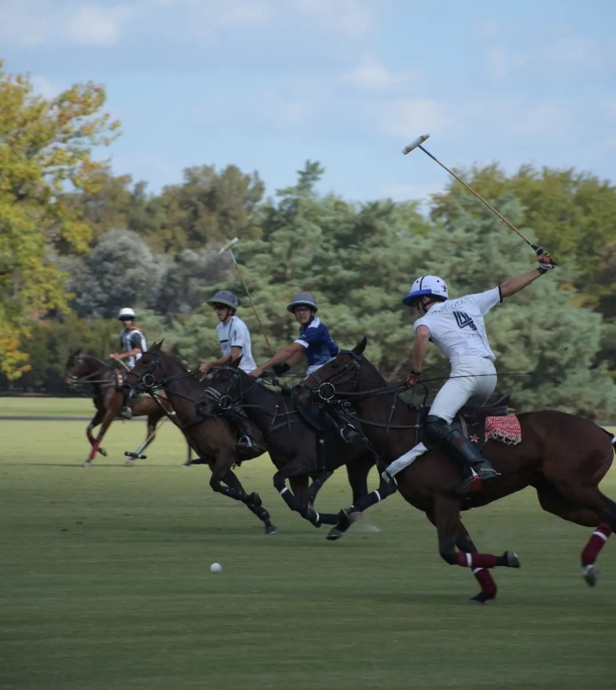

POLO


Historia del polo
El origen de la práctica del polo no ha sido definido al día de hoy, se piensa que fue jugado por primera vez por guerreros nómadas del Asia Central. La práctica del polo, por entonces, tenía el objetivo de entrenar a los jinetes de las unidades de caballería. El polo también se convirtió en un pasatiempo de la realeza en aquellas civilizaciones.


Primera seleccion de polo masculino en la Argentina
Los colonos británicos en las pampas argentinas comenzaron a practicar polo durante su tiempo libre en 1875, en la Estancia El Negrete, ubicada en la provincia de Buenos Aires. El juego se extendió por todo el país, y Argentina es reconocida mundialmente como la capital del polo; Argentina es notablemente el país con el mayor número de jugadores con 10 de handicap en el mundo. Los tres principales torneos de polo en Argentina, conocidos como "Triple Corona", son Hurlingham Polo Open, Tortugas Polo Open y Palermo Polo Open.
La temporada de polo suele durar de octubre a diciembre.

Seleccion actual Argentina
Actualmente, el país no tiene una selección estable en la cual pueda alinear a sus mejores jugadores. Esto se debe a que Argentina posee la liga de polo más poderosa del mundo. El nivel argentino en polo no tiene comparación; para mantener la competitividad a nivel internacional, la (FIP) tiene reglamentado que en el Campeonato Mundial de Polo el máximo handicap por equipo sea de 14 goles. Argentina es la única selección que actualmente podría formar más de un equipo nacional de handicap 40, es decir, que todos sus jugadores tengan 10 goles de categoría, el máximo a nivel mundial.
Informacion de la cancha y posiciones
Cancha
Las medidas de una cancha completa son las siguientes, Largo: máximo 275 metros; mínimo 230 metros, ancho: máximo 180 metros si es abierta y 146 metros si tiene tablas; mínimo, 160 metros si es abierta y 130 metros si tiene tablas.
Obtener informacion posiciones
Informacion de las faltas y reglas
Reglas
Los jugadores deben cumplir su rol en la cancha.
Los jugadores deben tener el taco en la mano derecha.
El uso del caso es obligatorio
Respetar la “línea de la bocha”
No cruzar al jugador que lleve la “línea de la bocha”
Después de cada gol se deben cambiar de lado en el campo.
Si hay empate, se juega un chukker adicional.
No empujar a otro jugador con el brazo separado del cuerpo.
No golpear la bocha por entre las extremidades del caballo rival.
No pasar el taco por sobre el caballo rival.
Obtener informacion faltas
Bocha y Palo de polo
Bocha
La moderna pelota de polo para exteriores está hecha de plástico de alto impacto. Históricamente han sido hechas de bambú, corcho cubierto de cuero, goma dura y durante muchos años raíz de sauce. Originalmente, los británicos usaban una pelota de cricket cubierta de cuero pintado de blanco.
Primera seleccion de polo femenino en Argentina
La historia hace justicia. Como en 1987, cuando se lanzó la idea de hacer primer Mundial de bajo handicap, la Argentina se quedó con la primera Copa del Mundo. En el mismo Campo Argentino de Polo.

Seleccion actual Argentina
Desde la realización del primer Mundial Femenino de Polo fue un hito significativo. Argentina no solo se consagró campeón, sino que el evento generó una destacada visibilidad internacional para el polo femenino, marcando un antes y un después en la historia de este deporte.

Asociacion Argentina de Polo
Instagram de la Asociacion Argentina
Volver al Inicio